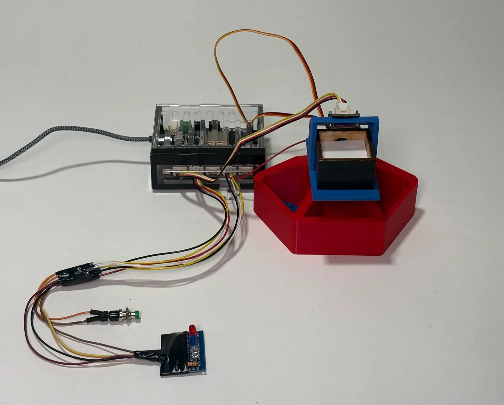
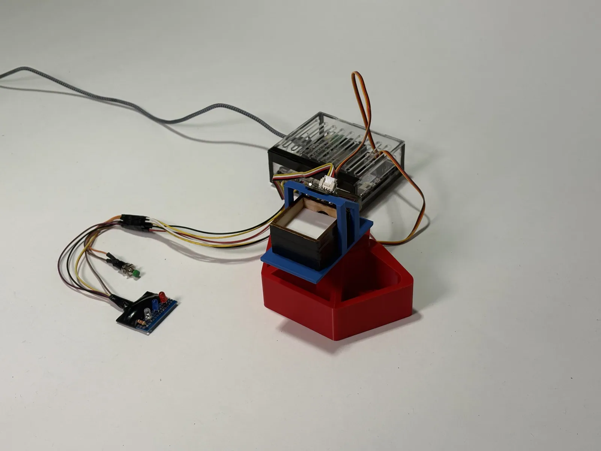
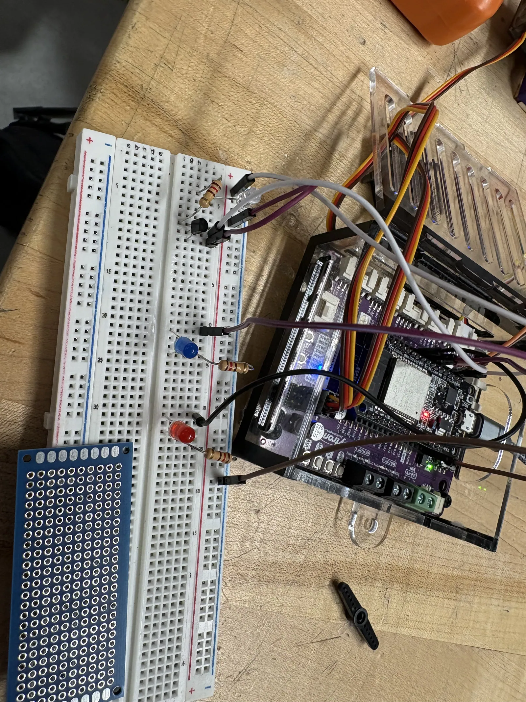
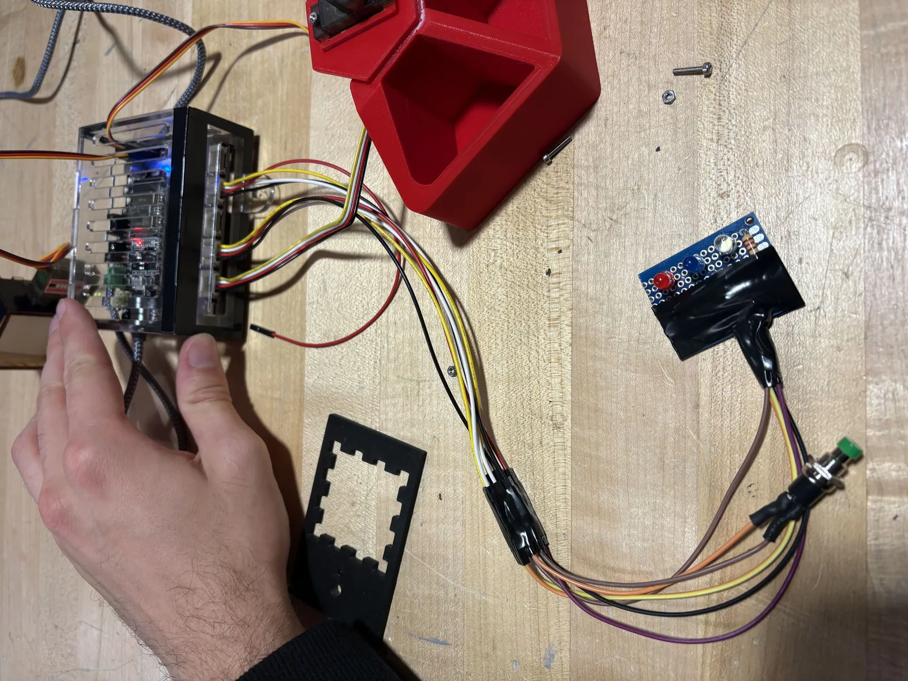
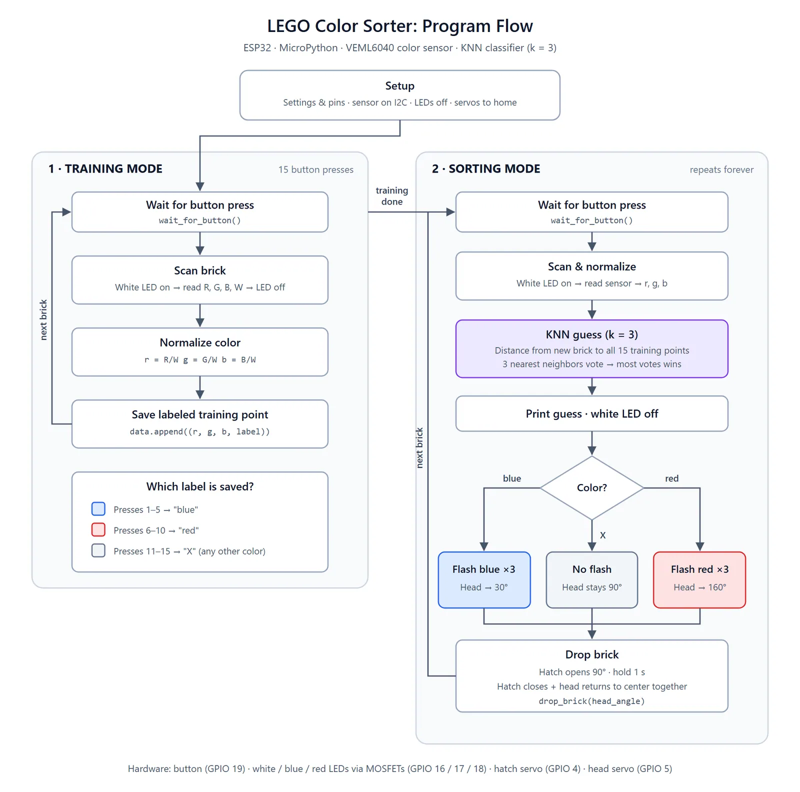
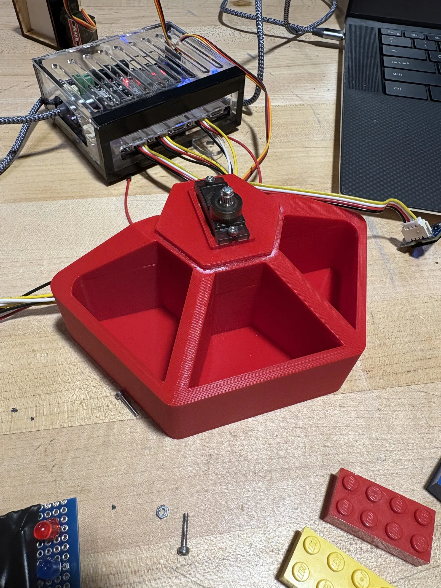
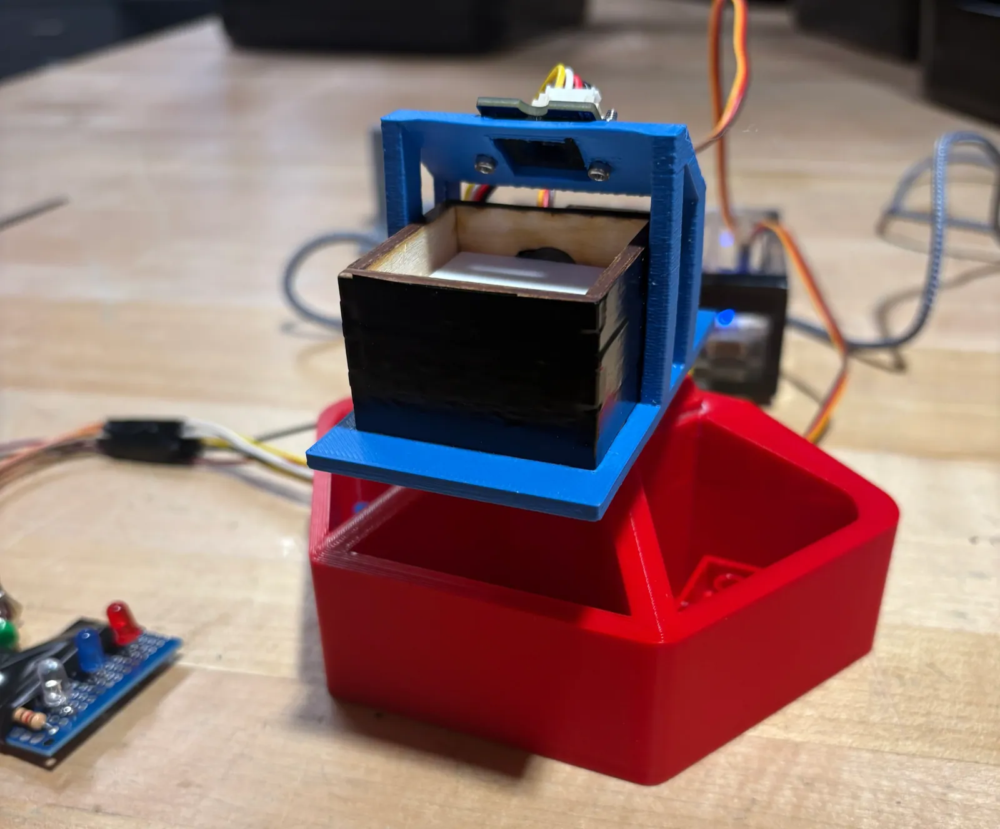

Week 3: KNN LEGO Sorting Robot

Objective
The objective of the Lego color sorting robot was to use the VEML6040 RGBW color sensor to differentiate different colored Lego bricks and sort them into different bins. The sensor uses I2C communication protocol to communicate with the ESP32. I2C is a communication method that allows electronic chips to talk to each other using just two wires. One computer (ESP32) can easily call and share data with multiple components (like color sensors, digital displays, etc.) by using unique digital signals for each part.
The sensor is used to create a training dataset that the Python program can use to differentiate and sort Lego pieces by color. KNN (K-Nearest Neighbors) is a simple machine learning algorithm that classifies new items based on how close they are to known examples. To figure out what color the newly presented Lego piece is, the algorithm looks at its closest neighbors and guesses that the new piece belongs to whichever group is the most common nearby. It does this by comparing the intensity of red, green, and blue that the sensor detects.
Design Goal
- Robot sorts 3 different colors (red, blue, yellow or misc.)
- KNN training data set consists of 5 scans of blue bricks, 5 scans of red bricks, and 5 scans of yellow or miscellaneous colored bricks.
- workflow: place brick in receptacle → press button → robot head rotates over corresponding bin → trap door opens to allow brick to fall into bin → head returns to center and trap door closes.

Video below shows the robot operating.

Testing of LED color indicators on a breadboard. Cable management at this point was messy, so we later improved the wiring by using the connection points on the side of the robo-board.

Code Structure

Pictures:


Challenges and Learning
We had to redesign the rotating head part of the robot a couple times for it to be compatible with the red base. On the second iteration we decided it would be a good idea to mount the hatch servo directly above the swivel servo so that the weight is concentrated above the axis of rotation. This helped with making the movement smoother since there is less of a moment arm.
Another challenge we faced was the wiring of the LEDs, button, servos, and sensor. Because there were many peripherals, the initial wiring to the ESP32 was messy and subject to be easily damaged. We consolidated the wiring by using the side connections on the Robo-board. This streamlined the wiring and made it much cleaner and durable.
I learned how to implement the K-Nearest Neighbors algorithm into a project and how to use I2C communication protocol for the color sensor. I also learned more about coding in Python, as I used an AI agent to help me learn throughout the process.
Originally written in Notion.